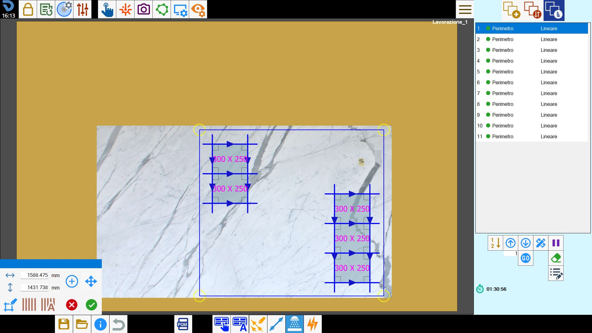
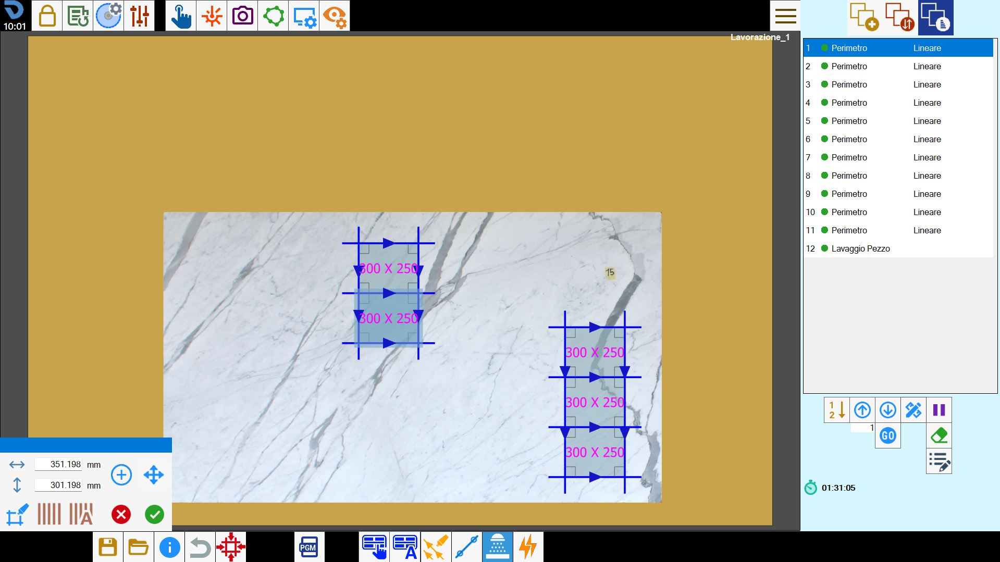

Es posible iniciar manualmente un ciclo de lavado del área, habilitar la adición automática de todo el banco y seleccionar una zona en la que realizar la limpieza.

Parámetros

 | Anchura |
 | Altura |
 | Crear área |
 | Mover |
 | Lavado de la pieza |
 | Limpiar banco |
 | Ciclo de lavado automático |
Modo de inserción de un ciclo de lavado
La adición de un ciclo de lavado implica insertar, dentro del área de trabajo, un rectángulo que indica la parte del banco que se someterá al lavado.
Es posible insertar varios ciclos de lavado; sus áreas también pueden solaparse parcial o completamente.
Cada nuevo ciclo de lavado se insertará al final de la lista de cortes, en el lado derecho.
Selección manual del área
Al pulsar el botón se habilita la posibilidad de añadir áreas de lavado personalizables.
A continuación se puede desplazar y redimensionar el área.

Después de modificar el área del ciclo de lavado según sea necesario, puede añadirse otra área de lavado pulsando de nuevo el botón.

Lavado de la pieza
Al habilitar este modo, el operador puede seleccionar una pieza. Después de la selección, el sistema genera automáticamente un área rectangular que encierra completamente la pieza seleccionada, como se muestra en el ejemplo siguiente:

Lavado completo del banco de trabajo
Al utilizar este modo, el sistema inserta automáticamente un corte denominado «Lavado del banco» en la lista de cortes y muestra su representación correspondiente en el área de trabajo.